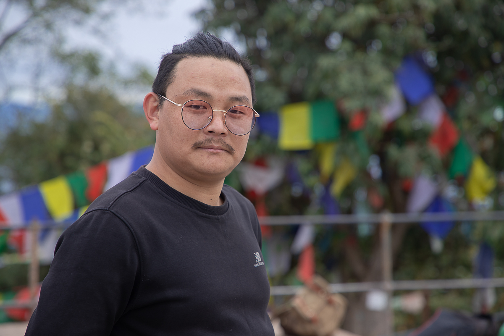
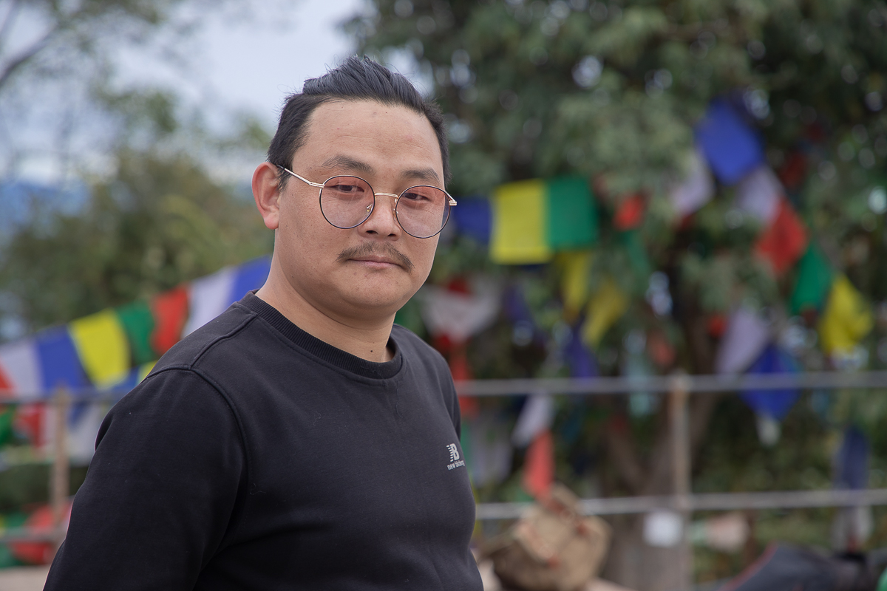
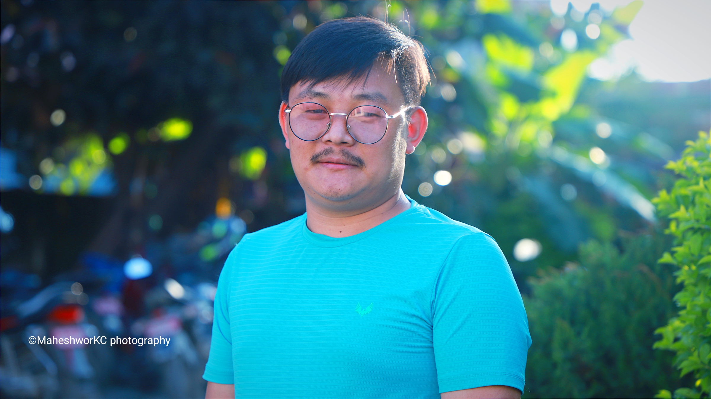
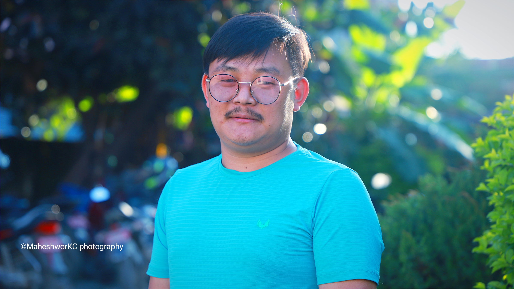

Contact info
- Mobile No:
08080252529 - E-mail:
saradrai1122@gmail.com - Address:
Kyoto, Japan
Skills
- Ms Word
- Ms Excel
- Ms Power Point
- Video Editing
- Photoshop
- News Reporting & Writing
Hobbies
- Travelling
- Reading
- Writing
RAI SARAD
IT Entrepreneur
About me
I am currently pursuing a Master's degree in Information Technology (IT) to further enhance my knowledge and skills in this rapidly evolving field. With a strong passion for technology and a dedication to continuous learning, I am gaining expertise in areas such as programming, database management, web development, and networking fundamentals. My interdisciplinary background, coupled with my analytical thinking and attention to detail, enables me to understand complex technical concepts quickly and apply them effectively. I am excited to leverage my MA in IT to drive innovation, enhance operational efficiency, and contribute to the success of organizations in this dynamic industry.
Education
2015-2017
Master's Degree in English
Ratna Rajya Laxmi Campus, Exhibition Road, Kathmandu
Tribhuvan University
Faculty of Humanities and Social Sciences
2012-2015
Bachelor's Degree in English & Journalism
Pashupati Multiple Campus, chabahil, Kathmandu
Tribhuvan University
Faculty of Humanities and Social Sciences
2010-2012
Higher Secondary Education
Pushpalal Memorial Higher Secondary School, Kapan, Kathmandu
Higher Secondary Education Board (HSEB)
2000-2010
School Leaving Certificate
Janata Ma Vi Lokhim, Solukhumbu
Work Experience
2015-2017
News Reporter
News24 Television, Panipokhari, Kathmandu
2017-2023 till (February)
Senior Input News Editor
news24nepal.tv, panipokhari, Kathmandu
2020-2023 till (March)
Journalism Subject Teacher
Baluddhar Higher Secondary School, Kapan, Kathmandu
Photos
 

 
